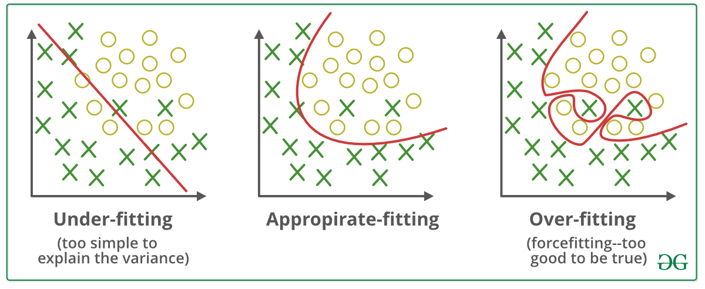
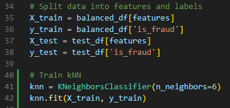
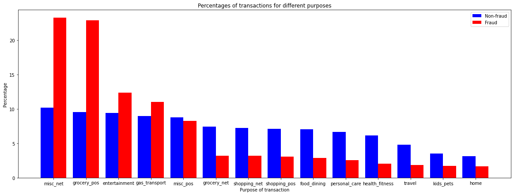
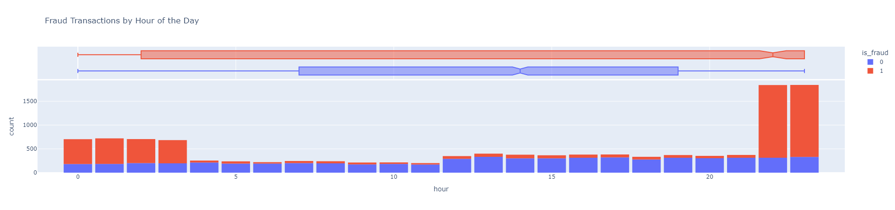
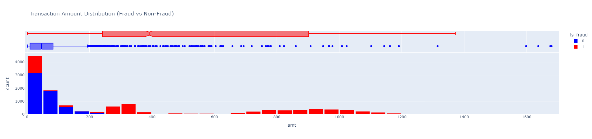
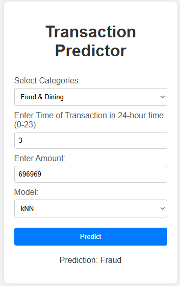

Neural networks are a type of machine learning model inspired by the way biological neural networks in the brain function[1]. They consist of layers of neurons connected by weights: an input layer that recieves data, one or more hidden layers that process the data, and an output layer that produces the final output. Each neuron (except in the input layer) calculates a weighted sum of its inputs, adds a bias, and applies an activation function to produce its ouput.
Neural Networks

Example of a small neural network
The sigmoid function is a common activation function defined as: \[ \sigma(z) = \frac{1}{1 + e^{-z}} \] where \(z_j^{l}\) is defined as the weighted sum of the jth neuron in the lth layer: \[ z_j^{l} = \sum_{k=1}^{n} w_{jk}^{l} a_k^{l-1} + b_j^{l} \quad \quad a_j^{l} = \sigma(z_j^{l}) \] It squashes any input into the range (0,1), making it useful for models that output probabilities. However, it suffers from the vanishing gradient problem, where gradients become too small during backpropagation, slowing down learning.
Backpropagation
Backpropagation is an algorithm used to train neural networks by minimising the cost function, often Mean Squared Error (MSE). The cost function for one training example is shown below: \[ C = \frac{1}{2} \sum_{j=1}^{m} (a_j^L - y_j)^2 \] It works by calculating the partial derivatives of the cost function with respect to each weight and bias using the chain rule[4].
In order to compute the partial derivatives we need, an intermediate quantity \( \delta ^{l}_{j} \) is introduced, which we call the error in the jth neuron in the lth layer [3], essentially representing how the activation in each neuron contributes to the overall error. The error is defined as follows: \[ \delta_j^l = \frac{\partial C}{\partial z_j^l} = \frac{\partial C}{\partial b_j^l} = \frac{\partial C}{\partial a_j^l} \cdot \sigma '(z_j^l) \]
For easier computation, we can rewrite the equation in a matrix-based form: \[ \delta^L = (a^L - y) \odot \sigma'(z^L) \] If we know the error for a layer, we can use the transpose of the weight matrix to calculate the error of the previous layer, as we effectively move the error backwards through the network: \[ \delta^l = \left( (w^{l+1})^T \delta^{l+1} \right) \odot \sigma'(z^l) \] An equation for the rate of change of the cost function with respect to any weight or bias in the network: \[ \frac{\partial C}{\partial w_{jk}^l} = a_k^{l-1} \cdot \delta ^{l}_{j} \quad \quad \frac{\partial C}{\partial b_j^l} = \delta_j^l \]
The gradient of the cost function is a vector of the partial derivatives we have calculated for each weight and bias in the network. To minimise the cost function, we adjust all the weights and biases in the direction of the negative gradient, gradually approaching a local minimum, using the gradient descent algorithm. This involves subtracting a fraction of the gradient, scaled by the learning rate (a hyperparameter controlling the size of the updates[2]), over multiple iterations to minimise the cost function, gradually improving its accuracy over time.[3]
Applications
There are various types of machine learning, such as classification, regression, clustering, and dimensionality reduction. We have decided to develop a classification model that can be implemented in a banking environment to predict fraudulent transactions.
Justification
Thinking about the outputs of the model, we would expect a yes/no answer from the model. Therefore, a classification model is the most suitable to predict whether a transaction is fraudulent or not.
Selecting Model
There are many classification models that we could use, such as Random Forest, Support Vector Machine, Neural Networks, Decision Trees, kNN, etc. We have decided to use a supervised model. This means that the model learns from labeled data, meaning each input has a known output (e.g., fraud/not fraud). This is different to an unsupervised model which finds patterns in unlabeled data, such as grouping similar transactions without predefined fraud labels. We have to choose a model that is suitable for our data and the problem we are trying to solve. We have briefly look at many models, such as Support Vector Machine (SVM), linear regression, etc. However we decided that kNN and Decision Tree are the most suitable for our data since they are easy to interpret, handle both numerical and categorical features well, and perform effectively with our dataset size and structure.
Classification
A classification model is a type of machine learning model that categorizes data into predefined classes, known as labels. It
learns patterns from labeled training data and predicts the class of new, unseen data. For example, in fraud detection, the labels
could be "fraudulent" or "genuine." To build an effective model, the dataset is typically split into training, validation, and
test sets to ensure the model generalizes well. A common split is training (70-80%), used for learning, and testing (20-30%), used
for evaluation.
Two common issues in classification are:
- Underfitting: The model is too simple and fails to learn meaningful patterns, resulting in poor accuracy on both training and test data.
- Overfitting: The model learns the training data too well, capturing noise instead of general patterns, leading to poor performance on new data.

[5] Graph representation for overfitting and underfitting
A well-balanced model avoids both overfitting and underfitting to ensure accurate predictions on real-world data.
KNN (k-Nearest Neighbours)
The k-Nearest Neighbors (kNN) algorithm is a simple yet powerful machine learning model used for classification and regression. It is a non-parametric, instance-based learning method, meaning it does not explicitly learn a function during training. Instead, it memorizes the training data and makes predictions by comparing new data points to their nearest neighbors. The key idea is that similar data points tend to belong to the same category. The closeness between points is usually measured using Euclidean distance, given by the number of features. \[ d(x, y) = \sqrt{\sum_{i=1}^{n} (x_i - y_i)^2} \] The value of k determines how many neighbors are considered for classification; the most common class among these neighbors is assigned to the new data point.

In our implementation, the dataset is first split into features (X) and labels (y). The training set (X_train, y_train) comes from balanced_df, ensuring that fraud and non-fraud cases are more evenly distributed to prevent bias. The test set (X_test, y_test) is used for evaluation. The kNN model is then initialized with k = 6 using KNeighborsClassifier(n_neighbors=6), meaning each transaction will be classified based on the majority class among its six nearest neighbors. Finally, we train the model using .fit(X_train, y_train), allowing it to store the training data for future predictions. To further improve performance, we can experiment with different values of n_neighbors.
Decision Tree
Decision Trees are another non-parametric, supervised-learning based and easy-to-understand type of maching learning model, used for classification and regression. This model learns certain rules that the data seems to follow to decide what the target variable should be, based on the data given, and uses this to predict the label of new data, checking at different stages if certain characteristics are true or false, as if passing the data through a flow chart.
Decision Trees are very efficient in terms of time, with a similar time complexity of to kNN. However, they're prone to overfitting: even the slightest change in the training data will result in a completely different tree being generated. This wasn't an issue for our data, however, because ours wasn't being live-fed, so it wasn't changing at all.
Analysing Data
To create an accurate model, we first needed to understand the problem: Which values in the dataset (we used synthetic data from Kaggle[6], which accurately represents real bank transactions) would be useful in predicting whether a transaction is fraudulent. We began our analysis by plotting various features (e.g., credit card numbers, transaction locations) against the fraud label to identify patterns that could help predict fraudulent transactions.

(Percentage of transactions per category graph)

(Transactions time against time graph)

(Transactions amount against time graph)
We have used matplotlib[7] to plot the features against the fraud label and identify patterns that could help predict fraudulent transactions. We have found out that the time of transaction, the amount of transaction, and the category of transaction are the most important features to predict whether a transaction is fraudulent or not. Therefore, we have used these features to train our model.
Evaluation
When measuring the efficiency of anything, the first method that comes to mind is measuring it's accuracy, the number of correct
predictions over the total number of predictions. However, this isn't as useful as it seems. Say you have 100 training examples,
98 of which are not fraud and 2 of which are fraud. A dummy model could predict all of these as not fraud and would end up with
98% accuracy, which seems high, but in fact the model is incapable of distinguishing between the 2 classes.
Before looking at other measures of efficiency, some terms that should be known are:
- True Positives (TP): positive cases that have been labeled as positive
- False Positives (FP): negative cases that have been labeled as positive
- True Negatives (TN): negative cases that have been labeled as negative
- False Negatives (FN): positive cases that have been labeled as negative
These are the methods that we used to measure our models:
Precision & Recall
Precision is a measure of how good the model is at correctly identifying a positive case, in this case identifying fraud alone. The formula for this is: \[ Precision = \frac{TP}{TP+FP} \] Recall (also called true positive rate) is a measure of the fraction of actual positive cases that were correctly identified: \[ Recall = \frac{TP}{TP+FN} \] These are normally used in tandem to make sure the model can accurately predict positive labels. In the case of our models, our kNN model had a precision and a recall of 6.03% and 93.57% respectively, and in the case of our decision tree, a precision of 7.16% and recall of 94.27%. While a low precision might seem bad, this is just because of the massive imbalance in our dataset; only a small fraction of the set is fraud, but despite this, the model initially assumes every entry has a 50% chance of being fraud or not. This leads to multiple false positives, leading to a low precision.
Area Under ROC Curve
A Receiver-operating characteristic (ROC) curve is a graph of true positive rate (or recall) plotted against false positive rate (the total false positives over true negatives and false positives). The area under this curve can be used to show how well the model can distinguish between the two classes.
Frontend
We have designed a transaction predictor webpage that allows users to upload a set of transaction data and we can determine if the transaction is fraudulent or genuine. This was being done by using a Flask API[8] to handle the backend, using joblib[9] to load the pre-trained model and feature packages, finally using HTML, CSS and Javascript to connect to the backend. It can be accessed at https://machinelearners.onrender.com.

In the above example, a ridiculous set of data is being input to the transaction predictor: Someone at 3 a.m. spending $696969 on food and dining, which gave us an output of a fraudulent transaction on both models.
References
1. Wikipedia contributors (2025) Neural Network (machine learning), Wikipedia. Available at: https://en.wikipedia.org/wiki/Neural_network_%28machine_learning%29 (Accessed: 02 April 2025).
2. GeeksforGeeks (2024) Learning rate in neural network, GeeksforGeeks. Available at: https://www.geeksforgeeks.org/impact-of-learning-rate-on-a-model/ (Accessed: 02 April 2025).
3. Nielsen, M.A. (1970) Neural networks and deep learning. Available at: http://neuralnetworksanddeeplearning.com/chap2.html (Accessed: 02 April 2025).
4. Sanderson, G. (no date c) Backpropagation calculus, 3Blue1Brown. Available at: https://www.3blue1brown.com/lessons/backpropagation-calculus (Accessed: 02 April 2025).
5. Comment et al. (2025) ML: Underfitting and overfitting, GeeksforGeeks. Available at: https://www.geeksforgeeks.org/underfitting-and-overfitting-in-machine-learning/ (Accessed: 02 April 2025).
6. Shenoy, K. (2020) Credit Card Transactions Fraud Detection Dataset, Kaggle. Available at: https://www.kaggle.com/datasets/kartik2112/fraud-detection/data (Accessed: 02 April 2025).
7. Visualization with python (no date) Matplotlib. Available at: https://matplotlib.org/ (Accessed: 02 April 2025).
8. Welcome to flask (no date) Welcome to Flask - Flask Documentation (3.1.x). Available at: https://flask.palletsprojects.com/en/stable/ (Accessed: 02 April 2025).
9. Running python functions as pipeline jobs (no date) Joblib. Available at: https://joblib.readthedocs.io/en/stable/ (Accessed: 02 April 2025).